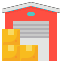

<mat-toolbar color="primary">
    <button
      (click)="opened = !opened"
      mat-icon-button
      aria-label="Example icon-button with menu icon"
    >
      <mat-icon>menu</mat-icon>
    </button>
    
    <span style="width: 1em"></span>
    <h1>
      {{ this.loading ? '' : this.butcher.username }}
    </h1>
  </mat-toolbar>
  <mat-sidenav-container autosize style="height: 93.4vh">
    <mat-sidenav mode="over" [(opened)]="opened">
      <mat-divider></mat-divider>
      <mat-nav-list>
        <a mat-list-item routerLink="/"> 
            <h4 matLine>
                Stores
            </h4>
            
        </a>

        <mat-divider></mat-divider>

        <a mat-list-item routerLink="/employees"> 
          <h4 matLine>
              Employees
          </h4>
          
      </a>

        <mat-divider></mat-divider>

        <a mat-list-item>
            <h4 matLine>
                Statistics
            </h4>
            
        </a>
  
        <a
          mat-list-item
          (click)="butcherService.handleLogOut()"
          style="position: absolute; bottom: 0"
        >
            <mat-icon matListIcon>logout</mat-icon>
            <h4 matLine>
                Logout
            </h4>
        </a>
      </mat-nav-list>
    </mat-sidenav>
    <mat-sidenav-content style="width: 100%; height: 100%;">
      <router-outlet></router-outlet>
    </mat-sidenav-content>
  </mat-sidenav-container>